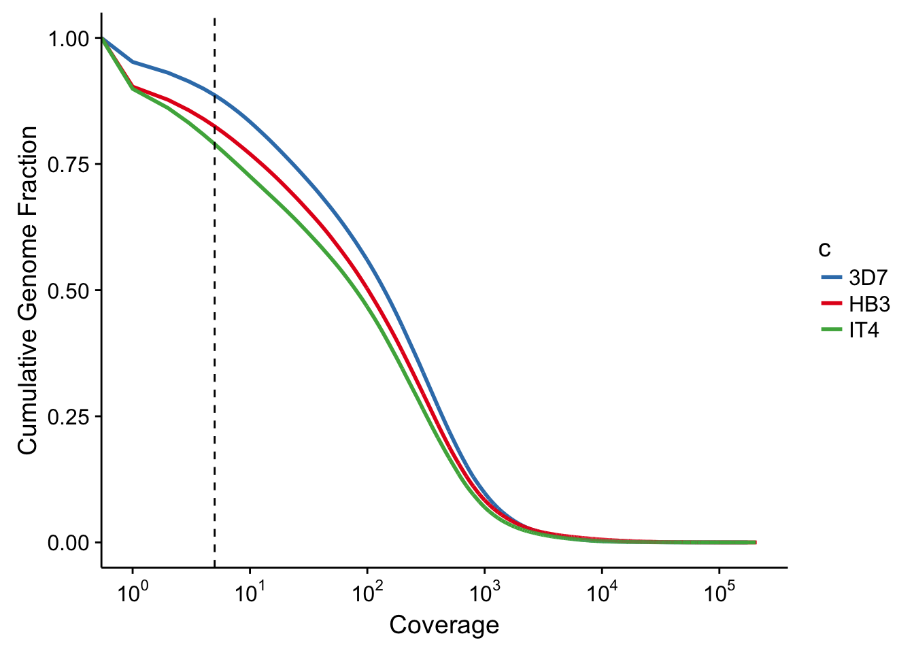

Last updated: 2017-03-08
Code version: 0e2e80a
The falciparum genomes sequences show extensive amounts of transcription. A very high percentage of the genome is transcribed, measured here by the number of base pairs covered by at least 5 reads.
for strain in 3d7 hb3 it;
do
bedtools genomecov -ibam "data/bam/mapped_to_3d7/${strain}.3d7_v3_chr.idc.bam" \
-g "data/genomes/pf3d7/PlasmoDB-28_Pfalciparum3D7_Genome.lengths" > "output/extensive_transcription/${strain}_genomecov.tsv"
doneread_genome_cov <- function(file,input_strain) {
df <- read_tsv(file, col_names=c("seqid","cov","nbases","length","fraction")) %>%
filter(seqid == "genome") %>%
arrange(desc(cov)) %>%
mutate(cum = cumsum(fraction))
df$strain <- input_strain
return(df)
}
cov3d7 <- read_genome_cov("../output/extensive_transcription/3d7_idc_genomecov.tsv", "3D7")Parsed with column specification:
cols(
seqid = col_character(),
cov = col_integer(),
nbases = col_integer(),
length = col_integer(),
fraction = col_double()
)
| | 0%
|= | 1%
|== | 2%
|=== | 3%
|=== | 4%
|==== | 5%
|===== | 6%
|====== | 7%
|======= | 8%
|======= | 9%
|======== | 10%
|========= | 11%
|========== | 12%
|========== | 13% 1 MB
|=========== | 14% 1 MB
|============ | 15% 1 MB
|============= | 16% 1 MB
|============== | 17% 1 MB
|============== | 18% 1 MB
|=============== | 19% 1 MB
|================ | 20% 1 MB
|================= | 21% 1 MB
|================== | 22% 1 MB
|================== | 23% 1 MB
|=================== | 24% 1 MB
|==================== | 25% 1 MB
|===================== | 26% 2 MB
|====================== | 27% 2 MB
|======================= | 28% 2 MB
|======================= | 29% 2 MB
|======================== | 30% 2 MB
|========================= | 31% 2 MB
|========================== | 32% 2 MB
|=========================== | 33% 2 MB
|=========================== | 34% 2 MB
|============================ | 35% 2 MB
|============================= | 36% 2 MB
|============================== | 37% 2 MB
|=============================== | 38% 2 MB
|=============================== | 39% 2 MB
|================================ | 40% 3 MB
|================================= | 41% 3 MB
|================================== | 42% 3 MB
|=================================== | 43% 3 MB
|=================================== | 44% 3 MB
|==================================== | 45% 3 MB
|===================================== | 46% 3 MB
|====================================== | 47% 3 MB
|======================================= | 48% 3 MB
|======================================= | 49% 3 MB
|======================================== | 50% 3 MB
|========================================= | 51% 3 MB
|========================================== | 52% 3 MB
|=========================================== | 53% 4 MB
|=========================================== | 54% 4 MB
|============================================ | 55% 4 MB
|============================================= | 56% 4 MB
|============================================== | 57% 4 MB
|=============================================== | 58% 4 MB
|=============================================== | 59% 4 MB
|================================================ | 60% 4 MB
|================================================= | 61% 4 MB
|================================================== | 62% 4 MB
|=================================================== | 63% 4 MB
|=================================================== | 64% 4 MB
|==================================================== | 65% 4 MB
|===================================================== | 66% 5 MB
|====================================================== | 67% 5 MB
|======================================================= | 68% 5 MB
|======================================================= | 69% 5 MB
|======================================================== | 70% 5 MB
|========================================================= | 71% 5 MB
|========================================================== | 72% 5 MB
|=========================================================== | 73% 5 MB
|=========================================================== | 74% 5 MB
|============================================================ | 75% 5 MB
|============================================================= | 76% 5 MB
|============================================================== | 77% 5 MB
|=============================================================== | 78% 5 MB
|=============================================================== | 79% 6 MB
|================================================================ | 80% 6 MB
|================================================================= | 81% 6 MB
|================================================================== | 82% 6 MB
|=================================================================== | 83% 6 MB
|=================================================================== | 84% 6 MB
|==================================================================== | 85% 6 MB
|===================================================================== | 86% 6 MB
|====================================================================== | 87% 6 MB
|====================================================================== | 88% 6 MB
|======================================================================= | 89% 6 MB
|======================================================================== | 90% 6 MB
|========================================================================= | 91% 6 MB
|========================================================================= | 92% 6 MB
|========================================================================== | 93% 7 MB
|=========================================================================== | 94% 7 MB
|=========================================================================== | 94% 7 MB
|============================================================================ | 95% 7 MB
|============================================================================= | 96% 7 MB
|============================================================================== | 97% 7 MB
|============================================================================== | 98% 7 MB
|===============================================================================| 99% 7 MB
|================================================================================| 100% 7 MBcovhb3 <- read_genome_cov("../output/extensive_transcription/hb3_idc_genomecov.tsv", "HB3")Parsed with column specification:
cols(
seqid = col_character(),
cov = col_integer(),
nbases = col_integer(),
length = col_integer(),
fraction = col_double()
)covit <- read_genome_cov("../output/extensive_transcription/it_idc_genomecov.tsv", "IT4")Parsed with column specification:
cols(
seqid = col_character(),
cov = col_integer(),
nbases = col_integer(),
length = col_integer(),
fraction = col_double()
)cov <- rbind(cov3d7,covhb3,covit)g <- cov %>%
ggplot(aes(x=cov,y=cum,color=strain)) +
geom_line(size=1) +
scale_x_continuous(trans="log10", breaks=c(1,10,100,1000,10000,100000),labels=trans_format('log10',math_format(10^.x))) +
outline_colors +
labs(x="Coverage",y="Cumulative Genome Fraction") +
geom_vline(xintercept=5,linetype=2)
ggsave(filename="../output/extensive_transcription/extensive_transcription.pdf",plot=g)Saving 7 x 5 in imageWarning: Transformation introduced infinite values in continuous x-axisprint(g)Warning: Transformation introduced infinite values in continuous x-axis
sessionInfo()R version 3.3.2 (2016-10-31)
Platform: x86_64-apple-darwin15.6.0 (64-bit)
Running under: OS X El Capitan 10.11.6
locale:
[1] en_US.UTF-8/en_US.UTF-8/en_US.UTF-8/C/en_US.UTF-8/en_US.UTF-8
attached base packages:
[1] stats graphics grDevices utils datasets methods base
other attached packages:
[1] scales_0.4.1 cowplot_0.7.0 magrittr_1.5 stringr_1.2.0
[5] dplyr_0.5.0 purrr_0.2.2 readr_1.0.0 tidyr_0.6.1
[9] tibble_1.2 ggplot2_2.2.1 tidyverse_1.1.1
loaded via a namespace (and not attached):
[1] Rcpp_0.12.9 git2r_0.18.0 plyr_1.8.4 workflowr_0.3.0
[5] forcats_0.2.0 tools_3.3.2 digest_0.6.12 lubridate_1.6.0
[9] jsonlite_1.3 evaluate_0.10 gtable_0.2.0 nlme_3.1-131
[13] lattice_0.20-34 psych_1.6.12 DBI_0.5-1 rstudioapi_0.6
[17] yaml_2.1.14 parallel_3.3.2 haven_1.0.0 xml2_1.1.1
[21] httr_1.2.1 knitr_1.15.1 hms_0.3 rprojroot_1.2
[25] grid_3.3.2 R6_2.2.0 readxl_0.1.1 foreign_0.8-67
[29] rmarkdown_1.3 modelr_0.1.0 reshape2_1.4.2 backports_1.0.5
[33] htmltools_0.3.5 rvest_0.3.2 assertthat_0.1 mnormt_1.5-5
[37] colorspace_1.3-2 labeling_0.3 stringi_1.1.2 lazyeval_0.2.0
[41] munsell_0.4.3 broom_0.4.2 This R Markdown site was created with workflowr